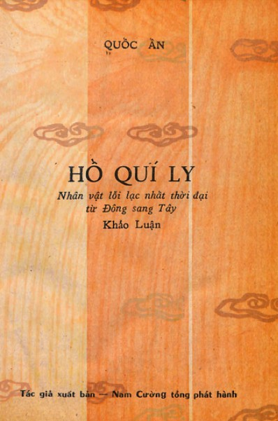

« Back
Hồ Quý Ly Nhân Vật Lỗi Lạc Nhất Thời Đại
By Quốc Ấn

PHẦN THỨ NHẤT : XÃ HỘI VIỆT NAM THỜI TRẦN MẠT
2. MỘT ĐẲNG CẤP LÃNH ĐẠO BẤT XỨNG
3. NHỮNG ÔNG VUA CUỐI TRIỀU
4. KHI ÔNG HOÀNG MÊ ĐÀO HÁT BỘI
5. ĐỐI NGOẠI
6. TÌNH CẢNH KHỐN ĐỐN CỦA NHÂN DÂN
PHẦN THỨ HAI : THÀNH KIẾN NHÂN DÂN VÀ Ý CHÍ CÁCH MẠNG CỦA HỌ HỒ
2. MỤC ĐÍCH BIỆN CHÍNH CHO THỦ ĐOẠN
3. NHỮNG LÝ DO THÚC ĐẨY VIỆC CƯỚP CHÍNH QUYỀN
4. HAI LỰC LƯỢNG PHẢN ĐỘNG
PHẦN THỨ BA : NHỮNG CÔNG CUỘC CÁCH MẠNG QUỐC GIA
2. CẢI CÁCH HÀNH CHÁNH
3. CẢI CÁCH QUÂN SỰ
4. CẢI CÁCH KINH TẾ TÀI CHÁNH ĐIỀN ĐỊA
5. CẢI CÁCH XÃ HỘI
6. CẢI CÁCH VĂN HÓA GIÁO DỤC
PHẦN THỨ TƯ : NHỮNG NGÀY TÀN CỦA TRIỀU HỒ
2. TÂM LÝ CHIẾN
3. THIÊN TÀI THẤT THẾ
Chu Thich